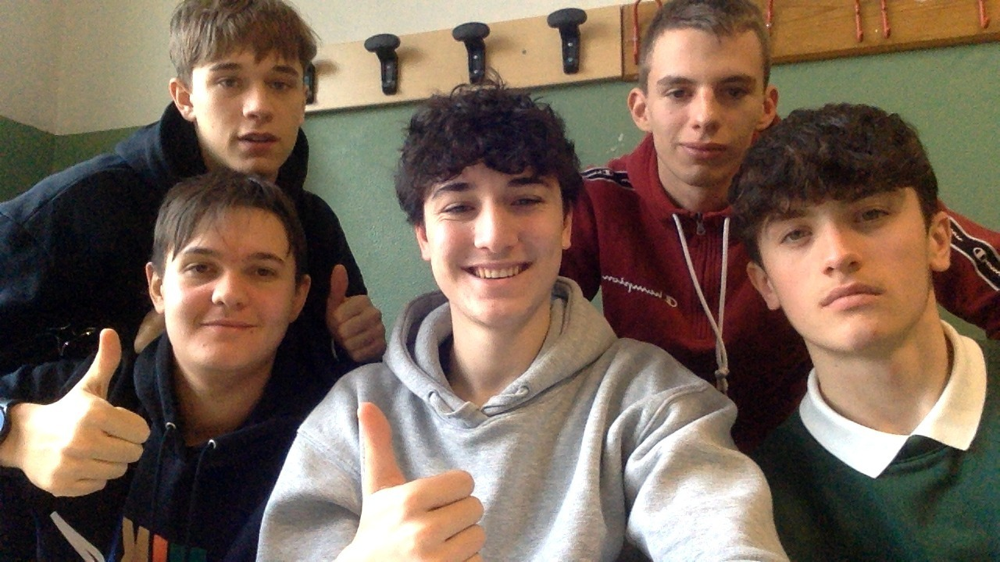

Progetto SCRUM 2026 — Intelligenza Artificiale in Azienda
SCRUM MASTER
“Ho scelto il progetto SCRUM 2026 come capolavoro perché mi ha fatto crescere davvero.
Come Scrum Master ho coordinato il mio team, facilitato le daily e tolto gli ostacoli:
ho assaporato cosa significa stare a capo di un gruppo, ascoltare prima di parlare
e far brillare gli altri. Abbiamo vinto il premio per la migliore applicazione del
metodo SCRUM: una conferma che il lavoro di squadra funziona.”
Anno Scolastico 2025 / 2026
TAFAB — Gruppo di Innovazione
Vincitori Premio Miglior Metodo SCRUM 2026
Panoramica del Progetto
Scrum2026-master
Una guida visiva al contenuto della cartella Scrum2026-master: cosa contiene, come funziona ciascun modulo e il percorso metodologico seguito per realizzarlo.
I
Il riconoscimento e il ruolo di Scrum Master
Una vittoria di squadra, guidata da un metodo applicato con rigore
Questo progetto non è soltanto un portale: è il risultato di un percorso premiato.
Durante l'edizione 2026 abbiamo conquistato il riconoscimento per la
migliore applicazione del metodo SCRUM, grazie a una squadra coesa,
sprint ben strutturati e una comunicazione continua tra i cinque membri del team.
Il mio ruolo
Scrum Master
Ho ricoperto il ruolo di Scrum Master, coordinando i cinque team (CM, HR, RS, PL, PV), facilitando le daily, rimuovendo gli impedimenti e garantendo che ogni sprint rispettasse i principi agili: trasparenza, ispezione e adattamento.
Premio vinto
Miglior Metodo SCRUM Applicato
Il progetto è stato giudicato come il miglior esempio di applicazione del framework SCRUM: backlog ben curato, sprint review puntuali, retrospettive efficaci e un incremento di prodotto realmente funzionante a ogni iterazione.

Il team TAFAB — Vincitori Premio Miglior Metodo SCRUM 2026
PL — Produzione e Logistica: la mia area Previsione domanda, gestione magazzino, ottimizzazione supply chain • Python, Pandas, Forecasting, Streamlit
Logo TAFABPanino RossoLinea Rossi PansPrototipo prodotto
II
Cosa contiene la cartella
Una panoramica dei contenuti, file e sotto-cartelle
Il progetto nasce come esercitazione SCRUM orientata all'applicazione dell'Intelligenza Artificiale ai processi aziendali di un'azienda alimentare ispirata a Morato Pane. Il prodotto è un mini-portale web (scrum.html) che fa da hub centrale verso cinque aree aziendali, ciascuna con una propria sotto-cartella e un proprio approfondimento.
Elementi principali alla radice
Alla radice si trovano il file scrum.html (la home con le cinque card cliccabili), il logo Logo_giusto.png usato in tutte le pagine e le cinque cartelle aziendali siglate: CM, HR, PL, PV, RS.
III
I cinque moduli aziendali
Ogni cartella rappresenta un'area in cui l'AI è stata applicata
CM · Commercial & Marketing
Marketing e Vendite
Contenuti promozionali, campagne pubblicitarie e analisi predittiva della domanda.
Pagina di approfondimento (apprf.html)
Pagina pubblicitaria del prodotto
Immagini e video promozionali
Tech: HTML / CSS · Asset grafici · Video MP4
HR · Human Resources
Risorse Umane
Recruiting intelligente, formazione adattiva e benessere dei dipendenti tramite AI.
Server Node.js + Express (server.js)
Pagine HTML di approfondimento
Esempi di AI applicata all'HR
Tech: Node.js · Express · HTML
RS · Research & Development
Ricerca e Sviluppo
Sperimentazioni con visione artificiale (YOLOv8) per il controllo qualità.
Modello yolov8n.pt pre-addestrato
Script Python test.py
Streamlit config + pagine HTML
Tech: Python · Streamlit · YOLOv8 · OpenCV
PL · Production & Logistics
Produzione e Logistica
Previsione domanda, gestione magazzino e ottimizzazione della supply chain.
MIA AREA
App Python (app.py, main_ai.py)
Moduli di forecasting
Dataset CSV (magazzino, ordini, BOM)
Tech: Python · Pandas · Forecasting · Streamlit
PV · Post-Vendita
Assistenza Clienti
Chatbot intelligente per supportare i clienti dopo l'acquisto.
Server Node.js + chatbot (server.js)
Dataset di FAQ (frequent_issues.json)
Interfaccia web di chat
Tech: Node.js · Express · JSON · CSV
IV
Struttura della cartella
Vista ad albero dei contenuti principali
Scrum2026-master/
|-- scrum.html# Home: hub con 5 card cliccabili
|-- Logo_giusto.png# Logo TAFAB usato ovunque
|
|-- CM/# Commercial & Marketing
| |-- index-.html
| |-- apprf.html
| |-- paginapubblicitaria.html
| |-- img/# Foto prodotto e mockup
| `-- vid/# Video promozionale
|
|-- HR/# Human Resources
| |-- index.html
| |-- server.js# Server Express
| |-- package.json
| `-- approfondimento/
|
|-- PL/# Production & Logistics (MIA AREA)
| |-- SPIEGAZIONE.html
| |-- Approfondimento.html
| `-- PROGETTOAI/# App Python di forecasting
| |-- app.py
| |-- main_ai.py
| |-- forecast_module.py
| |-- requirements.txt
| `-- data/# CSV: magazzino, ordini, BOM
|
|-- PV/# Post-Vendita
| |-- chatbot.html
| |-- approfondimento.html
| `-- CHATBOT/
| |-- server.js
| |-- dataset.csv
| `-- frequent_issues.json
|
`-- RS/# Research & Development
|-- test.py
|-- yolov8n.pt# Modello AI visione artificiale
|-- Pagine con approfondimento/
|-- Script/
`-- Style/
V
Come funziona
Flusso di navigazione e interazione con i contenuti
Il punto di ingresso è scrum.html. Aprendolo in un browser, l'utente vede una dashboard con cinque card animate, una per ogni area aziendale. Ogni card è cliccabile e porta alla pagina di approfondimento del modulo corrispondente.
1. Home
Apri scrum.html nel browser.
2. Scegli area
Clicca una delle cinque card.
3. Approfondisci
Leggi caso d'uso, vantaggi, esempi.
4. Demo AI
Avvia le demo Python o Node.js.
Esecuzione delle demo interattive
HR e PV (Node.js): entrare nella cartella, eseguire npm install e poi node server.js. Il server espone l'interfaccia su localhost.
PL (Python / Streamlit): dalla cartella PL/PROGETTOAI, pip install -r requirements.txt e poi streamlit run app.py.
RS (YOLOv8): richiede l'installazione di ultralytics e l'esecuzione di python test.py per analizzare immagini tramite il modello yolov8n.pt.
Le tappe in stile SCRUM: dall'idea al prodotto finito
01Definizione della visione
Scelta del contesto: un'azienda alimentare ispirata a Morato Pane e dei cinque ambiti dove l'AI può generare valore concreto.
BrainstormingProduct Vision
02Creazione del team SCRUM
Suddivisione in cinque gruppi, uno per area (CM, HR, RS, PL, PV), ciascuno responsabile del proprio incremento di prodotto.
RuoliResponsabilità
03Product Backlog
Stesura della lista delle funzionalità: pagine HTML informative, demo AI funzionanti, asset grafici e dataset di esempio.
User StoriesPriorità
04Sprint di progettazione
Definizione della palette cromatica, del layout a card e della struttura ad albero condivisa tra i moduli.
UI / UXDesign System
05Sprint di sviluppo
Ogni team ha sviluppato il proprio modulo: pagine statiche, server Node.js, applicazioni Streamlit e modelli AI.
HTML / CSS / JSPython · NodeAI Models
06Integrazione nel portale
Tutti i moduli sono stati collegati alla home scrum.html tramite le cinque card cliccabili e i relativi data-link.
LinkingNavigazione
07Review e Retrospettiva
Test della navigazione, verifica delle demo AI, raccolta feedback e correzione di bug visivi e funzionali.
QAFeedback
08Rilascio finale
Pubblicazione della cartella Scrum2026-master con tutti i moduli integrati e documentati in questa panoramica.
DeliveryDocumentazione
VII
In sintesi
Cosa porta a casa chi esplora questa cartella
Scrum2026-master non è soltanto una raccolta di file: è il risultato di un percorso di squadra in cui l'Intelligenza Artificiale incontra i processi reali di un'azienda. Ogni cartella racconta una storia, ogni demo dimostra un'idea, e l'intero portale dimostra come un metodo agile (SCRUM) possa trasformare concetti astratti in prodotti tangibili e navigabili.
Sotto la mia guida come Scrum Master, il team ha portato a casa il premio per la migliore applicazione del metodo SCRUM: una conferma che, quando il framework viene vissuto davvero e non solo recitato, i risultati arrivano.